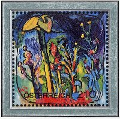

LIST 2004/11

（JY12「ワイラー名画」から）
＜略号＞
BK=切手帳、S/S=小型シート、(シ)=シール式、CEPT=「EUROPA」シリーズ、□=無目打
( )内の数字は、種類の数
全体に取り消し線のあるものは、売り切れです。(2014.11.25)
品番のみに取り消し線があるものは、入荷待ちです。
青文字の品番は、再入荷（在庫僅）です。
最近売り切れの時期が早まっております。
ご注文はおはやめにどうぞ。
★ 恐れ入りますが1000円未満のご注文はお受けできません ★
当店の価格はすべて【税込】です。
| 品番 | 品名 | 単価 |
| ＪＹ １ | アメリカ 雲の景色 15連 （シ） | 1300 |
| ＪＹ ２ | アメリカ 血液病早期検査 (1)（シ） | 85 |
| ＪＹ ３ | アメリカ Ｘマス聖母 両面平ＢＫ （シ） | 1700 |
| ＪＹ ４ | アメリカ Ｘマス聖母 両面平ＢＫ単 （シ） | 85 |
| ＪＹ ５ | マーシャル レーガン大統領追悼 (1) | 130 |
| ＪＹ ６ | マーシャル 2004芸術祭 12連 | 960 |
| ＪＹ ７ | ミクロネシア 欧州上陸作戦 S/S(2) | 1050 |
| ＪＹ ８ | パラオ 海の生物[2]６連と単 S/S(2) | 880 |
| ＪＹ ９ | パラオ 鄧小平 S/S | 420 |
| ＪＹ１０ | アンドラ（ス） CEPT 冬山スキー (1) | 250 |
| ＪＹ１１ | オーストラリア 鉄道の歴史 横５連（シ） | 365 |
| ＪＹ１６ | オーストリア 国防軍兵士と紋章 (1) | 140 |
| ＪＹ１８ | アゼルバイジャン 民族衣装 (4)＋S/S | 1490 |
| ＪＹ１９ | ベルギー EU新加盟国旗10連 ＢＫ（シ） | 1130 |
| ＪＹ２０ | ベルギー 国王70歳 (1)＋S/S | 335 |
| ＪＹ２１ | ベルギー アテネ５輪 (3)＋S/S | 630 |
| ＪＹ２２ | ベルギー CEPT 観光地 (2) | 285 |
| ＪＹ２３ | ベルギー お悔やみ切手 (1) | 130 |
| ＪＹ２４ | ベルギー 赤十字 救護活動 (1) | 160 |
| ＪＹ２５ | ベルギー 近代彫刻(JY112同図案) (2) | 270 |
| ＪＹ２６ | ボスニア（クロ） バレンタイン (1) | 50 |
| ＪＹ２７ | ボスニア（クロ） アインシュタイン (1) | 100 |
| ＪＹ２８ | ボスニア（イス） 建築文化遺産 S/S | 400 |
| ＪＹ２９ | ボスニア（イス） カモシカ（シャモア） (1) | 60 |
| ＪＹ３０ | ブラジル アテネ５輪 田連 | 435 |
| ＪＹ３１ | ブルガリア アテネ５輪 (4) | 400 |
| ＪＹ３２ | カナダ ノーベル化学賞 ２連 | 150 |
| ＪＹ３３ | カナダ ペット 犬猫兎金魚（シ）ＢＫ | 580 |
| ＪＹ３４ | カナダ ペット 犬猫兎金魚(シ）ＢＫ半 田連 | 290 |
| ＪＹ３５ | 中国 国境の風景 (12)＋S/S | 700 |
| ＪＹ３９ | 台湾 国際平和の日 (1) | 110 |
| ＪＹ４０ | チェコ 義務教育230年 凹(1) | 80 |
| ＪＹ４１ | エストニア タリン公会堂600年 (1) | 75 |
| ＪＹ４４ | ドイツ 建築家アイアーマン (1) | 280 |
| ＪＹ４６ | ドイツ 連邦裁判所 エンボス (1) | 400 |
| ＪＹ４８ | ドイツ 哲学者フォイエルバッハ (1) | 430 |
| ＪＹ５０ | ドイツ スパイアー寺院100年 (1) | 160 |
| ＪＹ５１ | ドイツ ドイツロシア青年友好 (1) | 160 |
| ＪＹ５２ | イギリス スコットランド議会 S/S | 570 |
| ＪＹ５３ | イギリス クリミア戦争の兵士 (6) | 1150 |
| ＪＹ５４ | グァンジー 800年祭 (6)＋S/S | 1710 |
| ＪＹ５５ | 香港 不足料切手 (6) | 470 |
| ＪＹ５６ | アイスランド 古代の巨石遺跡 S/S | 710 |
| ＪＹ５７ | アイスランド 港の病院60年 凹 (1) | 190 |
| ＪＹ５８ | アイスランド 昆虫 (2) | 360 |
| ＪＹ５９ | アイスランド キノコ (2) | 320 |
| ＪＹ６０ | アイスランド 初期の自動車 (1) | 290 |
| ＪＹ６１ | アイスランド 電球100年 (1) | 155 |
| ＪＹ６２ | アイルランド ノーベル賞 凹 田連 | 525 |
| ＪＹ６３ | アイルランド ノーベル賞 凹上下□田連 | 525 |
| ＪＹ６４ | アイルランド 普通花 ＢＫ（シ）とも (2) | 2320 |
| ＪＹ６５ | アイルランド 普通花 ＢＫの２連 (2) | 470 |
| ＪＹ６６ | イスラエル 小麦とパン (3) | 310 |
| ＪＹ６７ | イスラエル ベングリオン協会 (1) | 120 |
| ＪＹ６８ | イスラエル ヘブライ高校 (1) | 120 |
| ＪＹ６９ | イスラエル 冒険小説 (3) | 340 |
| ＪＹ７０ | イスラエル 社会保険庁 (1) | 340 |
| ＪＹ７１ | イスラエル 偉人(JT15同図案) (1) | 130 |
| ＪＹ７４ | イタリア タイ友好 同図案 S/S | 480 |
| ＪＹ７６ | ジャージー 海の生物[5] サンゴ(6)＋S/S | 1710 |
| ＪＹ７９ | ラトビア ホッケー(JV91) 上下□ＢＫ | 480 |
| ＪＹ８１ | ラトビア 橋シリーズ 鉄橋 S/S | 380 |
| ＪＹ８４ | リヒテン 上書き羊皮紙の原文研究 (1) | 410 |
| ＪＹ８５ | リヒテン リヒテン出土の化石 (3) | 770 |
| ＪＹ８６ | モナコ 世界マジックショー (1) | 115 |
| ＪＹ８７ | モントセラート アテネ５輪 (4) | 670 |
| ＪＹ８８ | オランダ 森の動物 各４種 S/S(2) | 1060 |
| ＪＹ８９ | ニジェール ♪ガーシュイン S/S | 260 |
| ＪＹ９０ | ＮＺ 指輪物語４種２組半 （シ）ＢＫ | 860 |
| ＪＹ９１ | ＮＺ 猿の親子 （シ）ＢＫ | 630 |
| ＪＹ９２ | ＮＺ 猿の親子 （シ）ＢＫ単片 | 70 |
| ＪＹ９３ | ＮＺ 衣装芸術 (5) | 850 |
| ＪＹ９４ | ＮＺ 国会150年(JS83) 追加発行 (1) | 65 |
| ＪＹ９５ | ＮＺ アテネ５輪 動く画面 （シ）(4) | 665 |
| ＪＹ９６ | ノルウエー バイキング船 凹 (3) | 875 |
| ＪＹ９７ | ノルウエー 青年の日 (2) | 470 |
| ＪＹ９８ | パプア サッカーチーム (4) | 690 |
| ＪＹ９９ | パプア FIFA サッカー100年 S/S(2) | 1300 |
| ＪＹ１００ | パプア アテネ５輪 (4) | 1035 |
| ＪＹ１０１ | パプア 改訂加刷 旗、イルカ (3) | 130 |
| ＪＹ１０３ | ポーランド 近代絵画 (4) | 590 |
| ＪＹ１０４ | ポルトガル CEPT バカンス (2)＋S/S | 590 |
| ＪＹ１０５ | ポルトガル 郵趣連合50年 (1)＋S/S | 480 |
| ＪＹ１０６ | ポルトガル 電話通信100年 (4) | 540 |
| ＪＹ１０７ | ポルトガル（アゾレス） WWF 魚（カジキ）横４連 | 320 |
| ＪＹ１０８ | ポルトガル ＵＥＦＡサッカー50年 S/S | 260 |
| ＪＹ１０９ | アゾレス CEPT バカンス (1)＋S/S | 440 |
| ＪＹ１１０ | マデイラ CEPT バカンス (1)＋S/S | 440 |
| ＪＹ１１１ | マデイラ 鳥、虫、トカゲ(3)＋S/S | 770 |
| ＪＹ１１２ | ルーマニア 近代彫刻(JY25同図) (2) | 350 |
| ＪＹ１１４ | ロシア ドイツロシア青年友好 (1) | 95 |
| ＪＹ１１５ | ロシア 戦争歴史絵画 (4) | 220 |
| ＪＹ１１６ | ロシア WWF クズリ 田連＋S/S | 1040 |
| ＪＹ１１７ | シェラレオネ 名画モナリザ (1) | 180 |
| ＪＹ１２０ | スペイン ボートレース (1) | 200 |
| ＪＹ１２２ | スペイン FIFA サッカー100年 (1) | 200 |
| ＪＹ１２３ | スペイン ジャコベオ聖堂、ホテル (2） | 270 |
| ＪＹ１２６ | スペイン 国立ガン協会 (1) | 75 |
| ＪＹ１２７ | スペイン ローマ時代芸術８連（シ） ＢＫ | 550 |
| ＪＹ１２８ | スペイン 国王普通 2c～77c (4) | 410 |
| ＪＹ１２９ | スルプスカ アテネ５輪(JX112) (3) | 470 |
| ＪＹ１３０ | バチカン CEPT 中世のバカンス (2) | 360 |
| ＪＹ１３１ | ベトナム ベトナム国名200年 (2) | 105 |